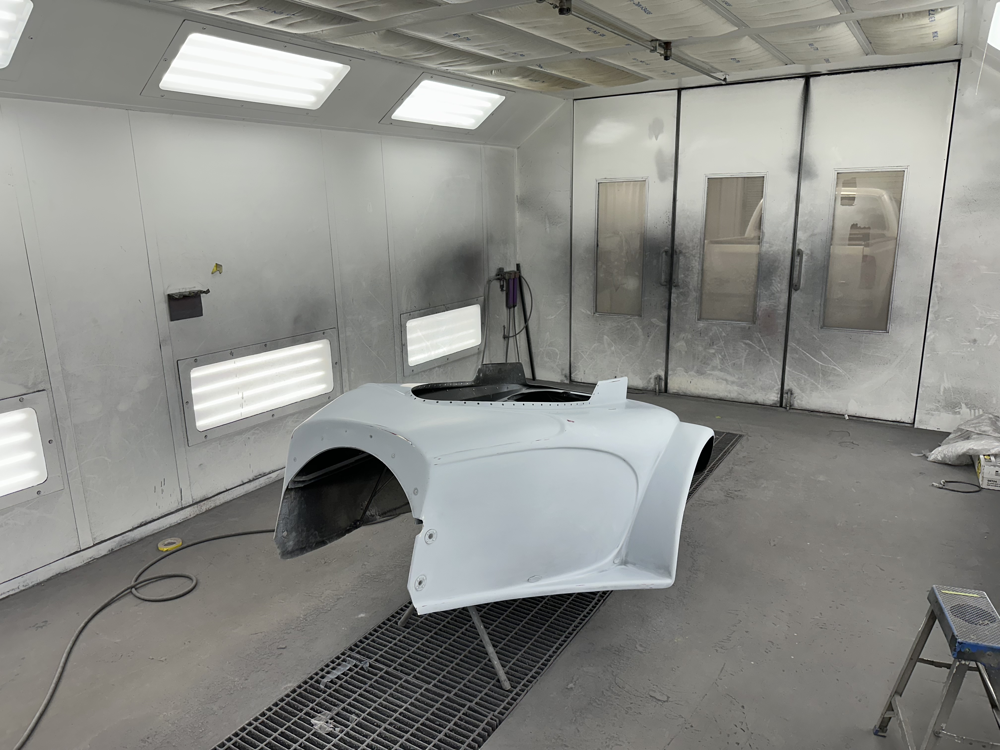
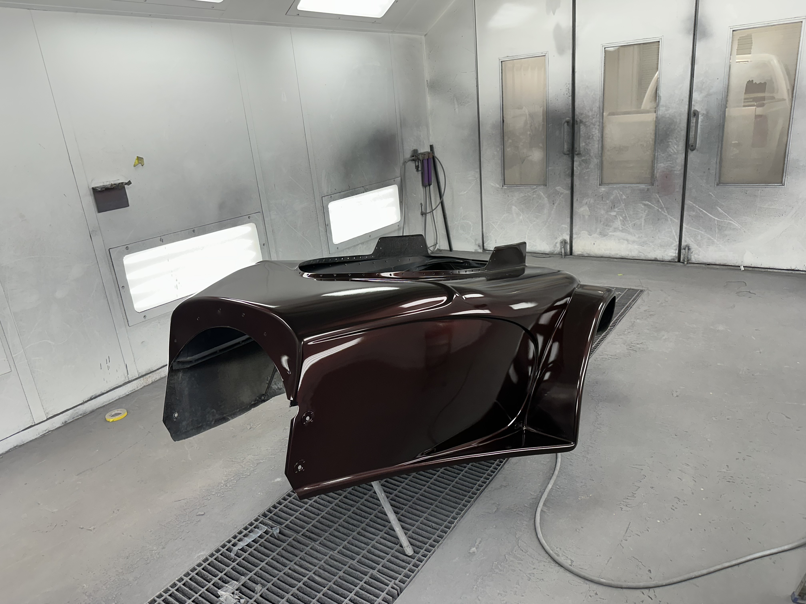

1500HP Drag Car Shell


The Story
This shell came in with major fiberglass cracks and broken corners. The structure had to be reinforced before any cosmetic work could begin.
The entire body was stripped, repaired properly, primed twice, blocked twice for straight panels, and then finished in a custom black cherry pearl using Revolt Auto Paint.
Vehicle Info
- 1500HP drag build
- Full fiberglass shell
- Custom black cherry pearl finish
- Show-quality prep and blocking process